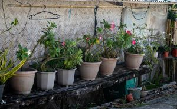
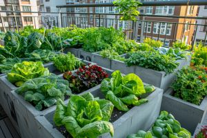
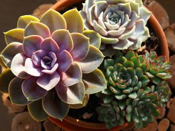
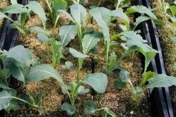
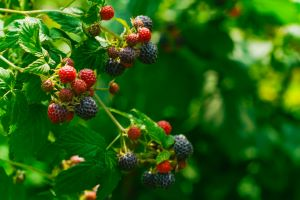

Gardening Guides
Indoor Plants
Light Requirements
Most indoor plants like pothos, peace lilies, and ZZ plants thrive in bright, indirect sunlight.
Watering
Water when the top 2 inches of soil are dry. Overwatering leads to yellow leaves and root rot.
Soil Type
Use a well‑draining potting mix with perlite or coco coir for airflow and moisture balance.
Common Issues
- Brown tips → Dry air, move away from heat vents
- Drooping leaves → Underwatering
- Moldy soil → Too much moisture, increase light
Outdoor Plants
Sunlight
Most vegetables and flowering plants need 6–8 hours of direct sunlight daily.
Watering
Water deeply every 2–3 days early in the morning to prevent evaporation.
Soil Preparation
Mix compost into beds twice a year to improve drainage and nutrient levels.
Pest Prevention
- Aphids → Neem oil spray weekly
- Cutworms → Cardboard collars around stems
- Slugs → Crushed eggshell barrier
Herbs

Sunlight & Placement
Herbs like basil, rosemary, and thyme need 5–6 hours of sunlight daily.
Watering
Keep soil slightly moist. Basil wilts if dry but rots if soggy.
Indoor Herb Picks
- Basil
- Mint
- Parsley
- Chives
Harvesting Tips
Trim leaves regularly to encourage new growth. Never remove more than one‑third of the plant at a time.
Succulents
Light
Succulents prefer bright, direct light. Rotate weekly to prevent leaning.
Watering
Allow soil to dry completely between watering. Water once every 2–3 weeks.
Soil Type
Use cactus/succulent mix for correct drainage.
Troubleshooting
- Mushy leaves → Overwatering
- Wrinkled leaves → Dehydration
- Stretched growth → Not enough light
Small‑Space Vegetables
Best Picks
- Cherry tomatoes
- Lettuce
- Radishes
- Carrots
Containers
Choose deep pots with drainage holes. Use compost‑rich soil and mulch the top to lock in moisture.
Watering
Water daily during summer heat. Morning watering prevents mold growth.
Fertilizing
Feed every 2 weeks with liquid organic fertilizer.
Berry Plants
Berry Types
- Strawberries
- Blueberries
- Raspberries
Sunlight
Berry plants thrive in full sun—at least 6 hours per day.
Soil Needs
Blueberries need slightly acidic soil (pH 5.5).
Watering
Keep soil consistently moist but not waterlogged.
Harvesting
Pick ripe berries gently and refrigerate immediately for freshness.